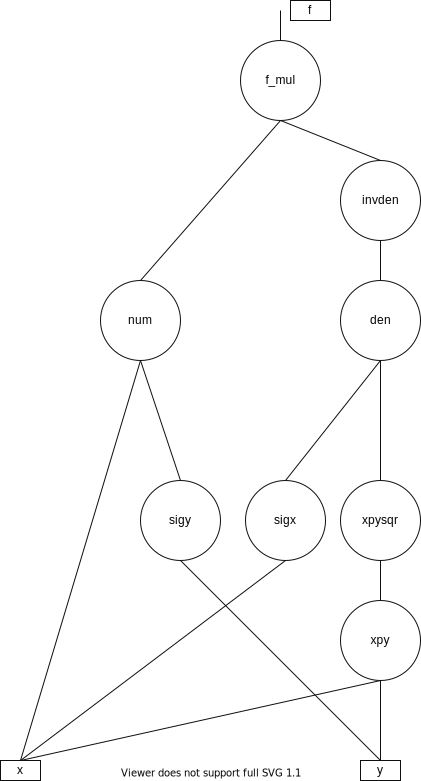
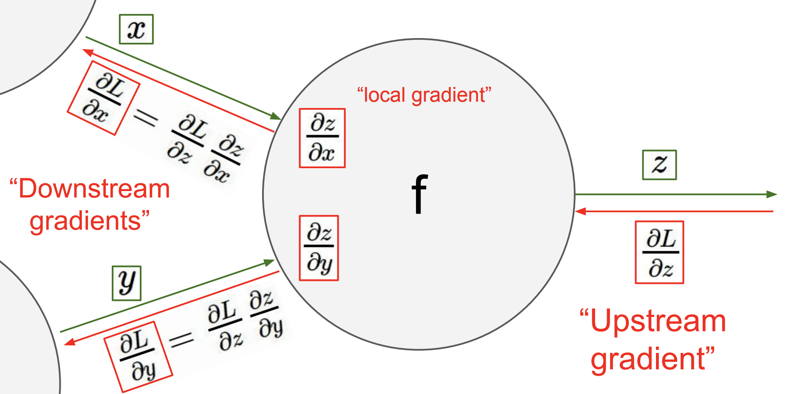

Introduction to Backpropagation
Contents
Introduction to Backpropagation¶
The backpropagation algorithm brought back from the winter neural networks as it made feasible to train very deep architectures by dramatically improving the efficiency of calculating the gradient of the loss with respect to all the network parameters.
In this section we will go over the calculation of gradient using an example function and its associated computational graph. The example does not have anything to do with DNNs but that is exactly the point. The essence of backpropagation was known far earlier than its application in DNN.
For students that need a refresher on derivatives please go through Khan Academy’s lessons on partial derivatives and gradients.
Calculating the Gradient of a Function¶
Our goal is to compute the components of the gradient of the function \(\nabla f = [ \partial f / \partial x , \partial f / \partial y ]^T\) where,
The computational graph of this function is shown below. Its instructive to print this graph and pencil in all calculations for both this example and others in the backpropagation section. You may need to review derivative tables from Calculus e.g. http://cs231n.stanford.edu/handouts/derivatives.pdf
One derivative that we will be using that is not often listed is the derivative of the sigmoid function. The sigmoid derivative can be obtained as follows:
Consider $\( f(x)=\dfrac{1}{\sigma(x)} = 1+e^{-x} . \)\( Then, on the one hand, the chain rule gives \)\( f'(x) = \frac{d}{dx} \biggl( \frac{1}{\sigma(x)} \biggr) = -\frac{\sigma'(x)}{\sigma(x)^2} , \)\( and on the other hand, \)\( f'(x) = \frac{d}{dx} \bigl( 1+e^{-x} \bigr) = -e^{-x} = 1-f(x) = 1 - \frac{1}{\sigma(x)} = \frac{\sigma(x)-1}{\sigma(x)} \)$
Equating the two expressions we finally obtain,

Forward Pass¶
In the forward pass, the algorithm works bottom up (or left to right depending how the computational graph is represented) and calculates the values of all “gates” (gates are the elementary functions that synthesize the function) of the graph and stores their values into variables as they will be used by the backwards pass. There are eight values stored in this specific example.
sigy = 1.0 / (1 + exp(-y)) #(1)
num = x + sigy # numerator #(2)
sigx = 1.0 / (1 + exp(-x)) #(3)
xpy = x + y #(4)
xpysqr = xpy**2 #(5)
den = sigx + xpysqr # denominator #(6)
invden = 1.0 / den #(7)
f = num * invden #(8)
Backwards Pass¶
In the backwards pass, we reverse direction and start at the top or rightmost node (the stored variables) of the graph and compute the input (in the reverse direction) derivative of input of each gate using the template depicted below:
 Backpropagation template
# gradient at the top
df = 1.0
# backprop f = num * invden
dnum = 1.0 * invden # gradient on numerator #(8)
dinvden = 1.0 * num #(8)
# backprop invden = 1.0 / den
dden = (-1.0 / (den**2)) * dinvden #(7)
# backprop den = sigx + xpysqr
dsigx = (1) * dden #(6)
dxpysqr = (1) * dden #(6)
# backprop xpysqr = xpy**2
dxpy = (2 * xpy) * dxpysqr #(5)
# backprop xpy = x + y
dx = (1) * dxpy #(4)
dy = (1) * dxpy #(4)
# backprop sigx = 1.0 / (1 + exp(-x))
dx += ((1 - sigx) * sigx) * dsigx # ATTENTION !!
# backprop num = x + sigy
dx += (1) * dnum #(2)
dsigy = (1) * dnum #(2)
# backprop sigy = 1.0 / (1 + exp(-y))
dy += ((1 - sigy) * sigy) * dsigy #(1)
As the previous example indicated, the essence of backpropagation algorithm is that local gradients can be calculated symbolically (using calculus) as they only depend on the simple gate structures and these gradients act as valves in the gradient flow that starts from the top of the network (the value of the flow there is always 1.0) and propagates to the bottom of the graph. Think about it as valves controlling the water flowing down a river delta. Individual flows may also merge like in the example above.
This example allowed us to understand how the gates control the flow. We have met add, multiply, branch (split) and one non-linear function.
Gate |
Description |
|---|---|
Add |
This gate always takes the gradient on its output and distributes it equally to all of its inputs, regardless of what their values were during the forward pass. This follows from the fact that the local gradient for the add operation is simply +1.0, so the gradients on all inputs will exactly equal the gradients on the output because it will be multiplied by x1.0 (and remain unchanged). |
Multiply |
Its local gradients are the input values (except switched), and this is multiplied by the gradient on its output during the chain rule. Notice that if one of the inputs to the multiply gate is very small and the other is very big, then the multiply gate will do something slightly non intuitive: it will assign a relatively huge gradient to the small input and a tiny gradient to the large input. Note that in linear classifiers where the weights are dot produced \(w^Tx_i\) (multiplied) with the inputs, this implies that the scale of the data has an effect on the magnitude of the gradient for the weights. For example, if you multiplied all input data examples \(x_i\) by 1000 during preprocessing, then the gradient on the weights will be 1000 times larger, and you’d have to lower the learning rate by that factor to compensate. This is why preprocessing matters a lot. |
Branch (or split) |
This gate takes a single input and produces a number of identical copies at the output. $\(x_k = x_{in}\)\( With \)k={1, \dots, K}\(, backpropagating the gate will produce, \)\(dx_{in} = \frac{\partial f}{\partial x_{in}} = \sum_k dx_k\)$. This gate was met in the example above and applied in lines (23) and (30). |